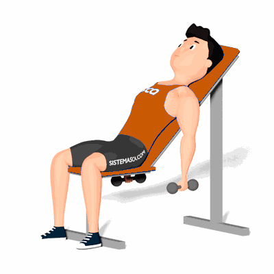

Rosca Alternada Inclinado

O exercício trabalha o fortalecimento e hipertrofia da região do bíceps, com ênfase ao bíceps braquial.
Ficha Técnica
Tipo: Musculação
Grupo Muscular: Bíceps
Aparelho: Nenhum
Músculos: Nenhum
Como realizar
- Pegue um par de halteres e sente-se em um banco inclinado em 45 graus;
- Mova as escápulas para trás e estenda totalmente os braços para baixo, permitindo que os halteres fiquem suspensos nas laterais do corpo com as palmas voltadas para fora;
- Flexionando o cotovelo, eleve um haltere em direção ao ombro;
- Faça uma pausa e então abaixe o corpo de volta à posição inicial.
 RC STORE
RC STORE